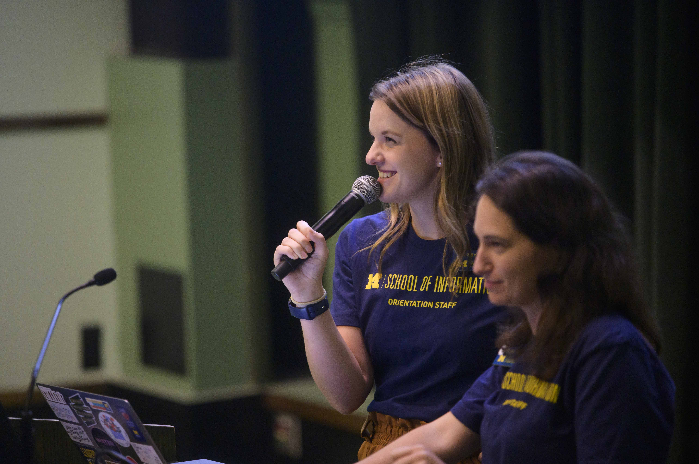

Welcome to Your Resume Toolkit
Ready to craft a resume that stands out? Whether you're a first-year student or wrapping up your degree, our resources are designed to help you showcase your unique skills and experiences. Based on direct feedback from employers and UMSI alumni, this guide will empower you to build a "good enough" resume—one that's versatile and ready to tailor for any opportunity.
Remember, there's no perfect resume, just a done one! Dive in, experiment, and let's get your story told.
Get Personalized Help from UMSI CDO
Don't go it alone—our Career Development Office (CDO) is here to guide you every step of the way. Schedule a chat to brainstorm your internship search, refine your cover letter, or practice interview skills.
- Career Coaching Appointments: One-on-one sessions to explore your goals and polish your materials. Book a Session with a Career Coach Today.
- Drop-in Coaching: Quick 5-10 minute questions during residential academic year—check CareerLink for times. (Pro tip: Save deeper dives for appointments!)
- Asynchronous Reviews: Upload to CareerLink for rubric-based feedback (first-year masters students and BSI juniors). It's a fast check for basics, not a full endorsement.
Key Resources to Build Your Best Resume
Start with these essentials to make your resume ATS-friendly, impactful, and employer-ready.
-
Writing Resume Bullets
Master the A-C-R Method (Action-Context-Results) to turn everyday tasks into skill-showing power statements. Avoid "I" statements or passive verbs—focus on what you achieved! -
Resume Review Rubric
Our checklist for structure, content, and formatting. Use it to self-audit before submitting. - Resume Refresh Workshop: Join CDO sessions for hands-on updates and basics.
- Resume Worded Tool: Free University access—log in with your @umich.edu account to scan for ATS compatibility and match against job descriptions.
- Indeed Resume Search: Browse examples in your field for inspiration on keywords and phrasing.
- University Career Center: General tips and templates for U.S. resume norms (great for industry switches).
Pro Tip: Tailor every application! Pull keywords from job postings and prioritize recent, relevant experiences.
Best Practices for UMSI Resumes
Craft a master resume first (no page limit, for your eyes only), then tailor it down. Aim for 1 page for tech/consulting roles; up to 2 for libraries or research.
Structure Tips
- Use clean fonts (Arial, Times New Roman, 10pt min) and consistent formatting—no fancy tables that break ATS.
- Margins 0.5in+; fill pages fully if multi-page.
- Contact info at top: Name, phone, email, LinkedIn/Portfolio (no full address for privacy).
Education Section
List first (unless 10+ years experience). Use full degree names like "Master of Science in Information (MSI), focus in UX Design" with expected graduation month/year. Add relevant coursework/projects if experience is light—e.g., "SI 501: Contextual Inquiry – Conducted user research for a startup client."
Experience & Leadership
Reverse chronological; use strong action verbs (e.g., "Led," "Optimized"). Quantify impacts: "Reduced processing time by 20% using Python scripts."
Skills & Other Sections
- List tools/languages (e.g., Python, Figma) and soft skills.
- Include certifications, online courses, or volunteer work if relevant.
AI Note
AI is great for brainstorming bullets or keyword spotting—but edit heavily for your authentic voice. Avoid uploading sensitive info; never copy-paste raw output.
Quick FAQ
- How long should it be? One page for most students; two max for experienced pros.
- Tailor for every job? Yes! Match keywords and prioritize relevance.
- Include projects/coursework? Definitely—UMSI work impresses employers.
- Update frequency? Every semester or after big wins.
Dive Deeper: Full Guide Download
For in-depth examples, action words, and more samples tailored to UMSI programs (like MSI-UX or MADS), grab our comprehensive guide.